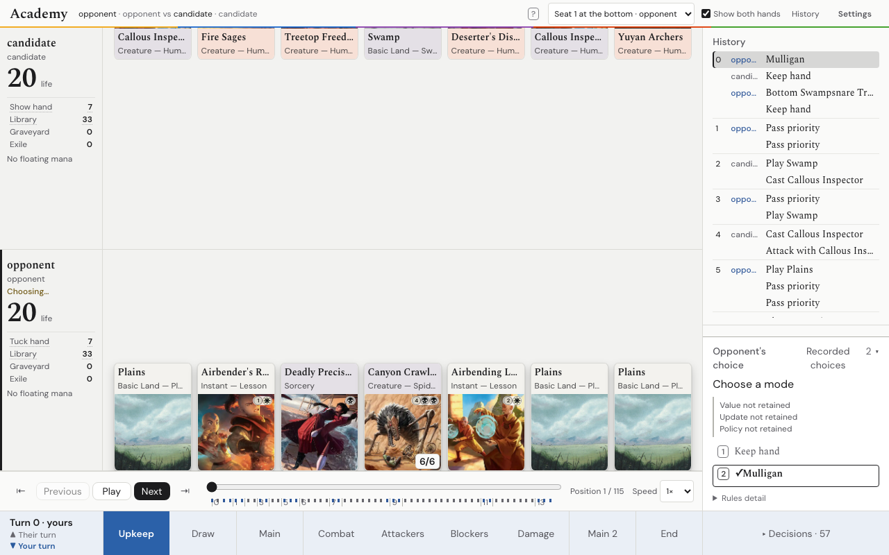

QA: native heuristic seats and background replay (MTG-506)
M4 Max, 2026-11-27, at d753a07d0a plus this QA's fixes. Debug build of the native extension, rebuilt because the last compress commit changed env.rs/vector_env.rs. Etude from a clean archive of 1f7496e9^, since the shared editable checkout has moved past the Matches name this tree imports. Trained w160l8 (26ff27b7). The timings are from a debug build and say nothing about throughput; Pass 3's release panel is the throughput evidence.
What works now
- The throughput CLI gives the same game on every leg across CPU scalar, CPU vector with 3 slots (backfill) and MPS vector-64: checkpoint actions, digests, policy seeds, endings and scores (16 of 16 shared legs per arm).
- Every new record replays. Built-in heuristic legs record
("agent", "heuristic:64")or the swapped pair; the boundedmanagym.replayCLI reportscompletewith statistics. - A registered custom code opponent (random) and the built-in heuristic play together in one
play_pairingsvector run. All 16 games replay, and the custom-code legs record("agent", "agent"). - A custom-code evaluation record opens and steps in Academy Replay.
- A stored heuristic seating with no version gets a clear refusal:
built-in heuristic requires version 'native-v3'; got None. Use a new tournament for the current version.
Scenario 1: throughput CLI, three arms
| Arm | Deals | Games | Mean rows/forward | Legs identical to CPU scalar |
|---|---|---|---|---|
| CPU scalar | 4 | 16 | 1.0 | reference |
| CPU vector, 3 slots | 4 | 16 | 2.85 | 16/16 |
| MPS vector, 64 slots | 8 | 32 | 10.6 (32 games fill at most 32 slots) | 16/16 shared |
{"arm": "cpu-v3", "baseline": "cpu-scalar", "games": 16, "shared": 16, "matching": {"deck_labels": 16, "seats": 16, "seeds": 16, "actions": 16, "digests": 16, "policy_seeds": 16, "end": 16, "score": 16}, "scores": [14, 0, 2], "changed_legs": []}
{"arm": "mps-v64", "baseline": "cpu-scalar", "games": 32, "shared": 16, "matching": {... all 16 ...}, "changed_legs": []}
One CPU vector run took 303 s wall time for 57 s of measured play. Power logs show the display sleeping and the system idling at that time, and a 1-deal rerun took 24 s, so I'm treating it as the laptop sleeping, not the code. The QA note now says to wrap runs in caffeinate -i.
Scenario 2: returning user with Pass 3 records
Pass 3's 32-deal records (.runs/eval-throughput/mtg506/w160-mps-vector) match today's games on actions, seats, seeds and scores, but not on digests or endings. Replay stops them at index 0:
{"status": "diverged", "index": 0, "reason": "pre-decision digest differs; recorded managym 0.2.6 cards 869c59… engine 9e2831…; running managym 0.2.6 cards 869c59… engine c7f493…", "build_differs": true}
The cause is main's MTG-500 (606e79e90a, merged here at 793880c852), which moved the match-state digest from v34 to v35. That PR documents it. Old records open with the revision that wrote them, and the message names both engines.
Scenario 3: custom code opponent beside the built-in heuristic
heuristic [(1.0, True), (1.0, True), (1.0, True), (0.0, True)] random [(1.0, True), (1.0, True), (1.0, True), (1.0, True)] heuristic [(1.0, True), (1.0, True), (1.0, True), (1.0, True)] random [(1.0, True), (1.0, True), (1.0, True), (1.0, True)] 6cfe4e8f ['agent', 'heuristic:64'] 66 True 6cfe4e8f ['heuristic:64', 'agent'] 101 True 7369de7f ['agent', 'agent'] 168 True … (16 games, all replay_game passed)
My first driver registered the random anchor against deal 0's pairing, and both random deals failed with player is not bound to the selected matchup. That was my mistake, not the code's: the error was correct and isolated to those two deals, and the heuristic deals finished. The driver now registers per deal, and the QA note describes how.
Scenario 4: Academy with evaluation records
Custom-code record, opened in Replay at 1280×800, with no console errors:

Fixed: a native-seat record (the common case now, any evaluation against the built-in heuristic) was refused with advice that does not work:
replay.rejected: Academy requires both seats' surfaced decisions; native-seat records are not yet viewable; open the trace with the revision that wrote it.
replay.rejected: Academy requires both seats' surfaced decisions; native-seat records (such as an evaluation against the built-in heuristic) are not yet viewable. Verify the game with `uv run python -m managym.replay <file>`.
The writing revision can't view it either. Watch now raises a typed NativeSeatRecord, and launch passes its message through unchanged. The browser import route gets the same text. The new test fails without the launch change.
| @@ -557,7 +557,7 @@ class Academy: | |||
| 557 | 557 | from fastapi import HTTPException | |
| 558 | 558 | ||
| 559 | 559 | from managym.academy.attempts import AttemptStore | |
| 560 | - | from managym.academy.watch import import_game | |
| 560 | + | from managym.academy.watch import NativeSeatRecord, import_game | |
| 561 | 561 | ||
| 562 | 562 | if isinstance(source, Path): | |
| 563 | 563 | selected = _select_game(source, game) | |
| @@ -570,6 +570,8 @@ class Academy: | |||
| 570 | 570 | "Install the matching manabot release: uv pip install --only-binary :all: --torch-backend cpu manabot", | |
| 571 | 571 | ) from exc | |
| 572 | 572 | raise AcademyLaunchError("replay.rejected", str(exc.detail)) from exc | |
| 573 | + | except NativeSeatRecord as exc: | |
| 574 | + | raise AcademyLaunchError("replay.rejected", str(exc)) from exc | |
| 573 | 575 | except Exception as exc: | |
| 574 | 576 | raise AcademyLaunchError( | |
| 575 | 577 | "replay.rejected", | |
| @@ -32,6 +32,10 @@ from .villain import NATIVE_WATCH_PLAYERS, build_villain_policy, player_fields | |||
| 32 | 32 | from .work import Work | |
| 33 | 33 | ||
| 34 | 34 | ||
| 35 | + | class NativeSeatRecord(ValueError): | |
| 36 | + | """A record in which a seat stepped natively, so its turns were never surfaced.""" | |
| 37 | + | ||
| 38 | + | ||
| 35 | 39 | class WatchCreated(TypedDict): | |
| 36 | 40 | id: str | |
| 37 | 41 | finished: bool | |
| @@ -483,9 +487,14 @@ def import_record(record: "GameRecord") -> dict[str, Any]: | |||
| 483 | 487 | ||
| 484 | 488 | if not record.skip_trivial: | |
| 485 | 489 | raise ValueError("Academy requires forced-decision skipping") | |
| 486 | - | if record.resolved_player_policies != ("agent", "agent"): | |
| 487 | - | raise ValueError( | |
| 488 | - | "Academy requires both seats' surfaced decisions; native-seat records are not yet viewable" | |
| 490 | + | if len(record.games) == 1 and record.policies_for(record.games[0]) != ( | |
| 491 | + | "agent", | |
| 492 | + | "agent", | |
| 493 | + | ): | |
| 494 | + | raise NativeSeatRecord( | |
| 495 | + | "Academy requires both seats' surfaced decisions; native-seat records " | |
| 496 | + | "(such as an evaluation against the built-in heuristic) are not yet " | |
| 497 | + | "viewable. Verify the game with `uv run python -m managym.replay <file>`." | |
| 489 | 498 | ) | |
| 490 | 499 | replay = walk(record) | |
| 491 | 500 | source = record.sha256 | |
Wrong input
Fixed: without the trophy corpus, the throughput CLI raised a raw FileNotFoundError after creating --output-dir, so the rerun after fetching failed with "exists; each arm needs a fresh directory". It now stops before creating anything:
eval_throughput.py: error: the trophy corpus …/experiments/data/mtg409/pools-v2/corpus.json is missing; fetch it with `uv run python -m manabot.data fetch experiments/data/mtg409/pools-v2/corpus.json`
| @@ -47,7 +47,7 @@ from manabot.infra.files import atomic_json | |||
| 47 | 47 | from manabot.infra.identity import file_sha256 | |
| 48 | 48 | from manabot.policy.checkpoint import read_container | |
| 49 | 49 | from manabot.policy.prepare import Prepared | |
| 50 | - | from manabot.sim.heuristic import heuristic_source_paths | |
| 50 | + | from manabot.sim.heuristic import HEURISTIC_VERSION, heuristic_source_paths | |
| 51 | 51 | from manabot.sim.registration import EvalPrecision | |
| 52 | 52 | ||
| 53 | 53 | ARENA = "eval-throughput" | |
| @@ -102,7 +102,9 @@ def trophy_deals( | |||
| 102 | 102 | raise ValueError(f"the trophy split has fewer than {2 * count} playable pools") | |
| 103 | 103 | candidate = checkpoint_player(ref) | |
| 104 | 104 | heuristic = Code( | |
| 105 | - | name="heuristic", source=heuristic_source_paths(), config=HEURISTIC | |
| 105 | + | name="heuristic", | |
| 106 | + | source=heuristic_source_paths(), | |
| 107 | + | config={**HEURISTIC, "version": HEURISTIC_VERSION}, | |
| 106 | 108 | ) | |
| 107 | 109 | specs: dict[str, PairingSpec] = {} | |
| 108 | 110 | matches: list[Match] = [] | |
| @@ -161,6 +163,12 @@ def main() -> None: | |||
| 161 | 163 | parser.error(f"--device {args.device} is unavailable on this host") | |
| 162 | 164 | if args.checkpoint is not None and not args.checkpoint.is_file(): | |
| 163 | 165 | parser.error(f"--checkpoint {args.checkpoint} is not a file") | |
| 166 | + | if not corpus_path().is_file(): | |
| 167 | + | parser.error( | |
| 168 | + | f"the trophy corpus {corpus_path()} is missing; fetch it with " | |
| 169 | + | "`uv run python -m manabot.data fetch " | |
| 170 | + | "experiments/data/mtg409/pools-v2/corpus.json`" | |
| 171 | + | ) | |
| 164 | 172 | out = args.output_dir.resolve() | |
| 165 | 173 | if out.exists(): | |
| 166 | 174 | parser.error(f"--output-dir {out} exists; each arm needs a fresh directory") | |
| @@ -225,9 +233,10 @@ def main() -> None: | |||
| 225 | 233 | ) | |
| 226 | 234 | stages = { | |
| 227 | 235 | "forward": timing.seconds, | |
| 228 | - | "replay": replay_seconds, | |
| 229 | - | "other_arena": seconds - timing.seconds - replay_seconds, | |
| 230 | 236 | } | |
| 237 | + | if args.runner == "scalar": | |
| 238 | + | stages["replay"] = replay_seconds | |
| 239 | + | stages["other_arena"] = seconds - sum(stages.values()) | |
| 231 | 240 | summary = { | |
| 232 | 241 | "platform": platform.platform(), | |
| 233 | 242 | "torch": torch.__version__, | |
| @@ -251,6 +260,9 @@ def main() -> None: | |||
| 251 | 260 | "stage_seconds": stages, | |
| 252 | 261 | "largest_stage": max(stages, key=stages.__getitem__), | |
| 253 | 262 | } | |
| 263 | + | if args.runner == "vector": | |
| 264 | + | # Worker durations can overlap both gameplay and one another. | |
| 265 | + | summary["background_replay_seconds"] = replay_seconds | |
| 254 | 266 | if args.device == "mlx": | |
| 255 | 267 | summary["mlx"] = version("mlx") | |
| 256 | 268 | if args.device == "cuda": | |
Not reached
- L4 / CUDA arms, and the full 32-deal release panel: Pass 3 covers both, and this QA used a debug build.
- Managed Etude
play_manyagainst the releasedetude-sdk 0.5.0, which MTG-497 owns. The local SDK tree is a pre-rename archive. - Viewing a native-seat game in Watch: deferred by design (plan, review Q3).
Still wrong, worst first
ScalarCapturerecords no seat policies, andEnvhas no getter for them. A scalar capture ofEnv(player_policies=("agent", "heuristic"))writes an("agent", "agent")record that diverges at index 0. This predates MTG-506; the vector capture is correct. Logged inscratch/questions.md.- Records written before the v35 digest (MTG-500) can't replay on this branch. Expected, and documented by that PR.